Bib-ACMé:
Bibliografía digital de novelas argentinas, cubanas y mexicanas (1810-1930)
Ulrike Henny-Krahmer
(CLiGS, Universidad Würzburg, Alemania)
HDH2017 "Sociedades, políticas, saberes"
Málaga, 19 de Octubre, 2017
Diapositivas en: https://hennyu.github.io/hdh_17


Índice
- ¿Bibliografías digitales?
- Bib-ACMé
- Objetivos
- Fuentes & criterios de seleccíon
- Modelo de datos
- Aplicación web & análisis
- Conclusiones y perspectivas
¿Bibliografías digitales?
|
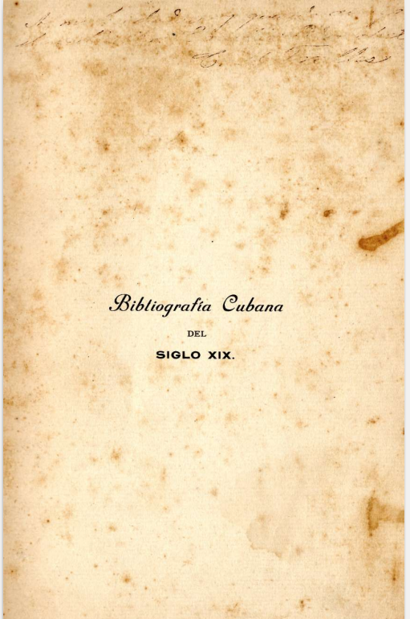
Carlos Trelles: Bibliografía Cubana del Siglo XIX |
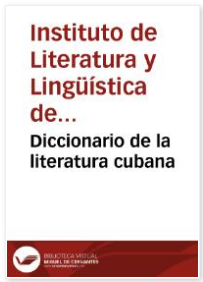
Diccionario de la literatura cubana (en Cervantes Virtual) 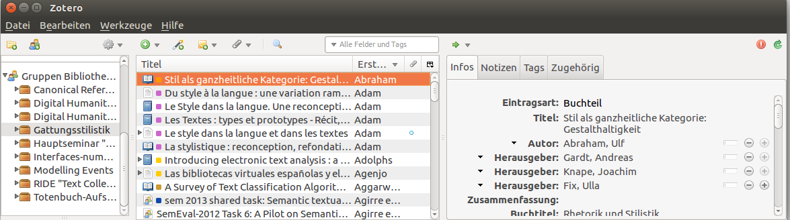 Software Zotero |
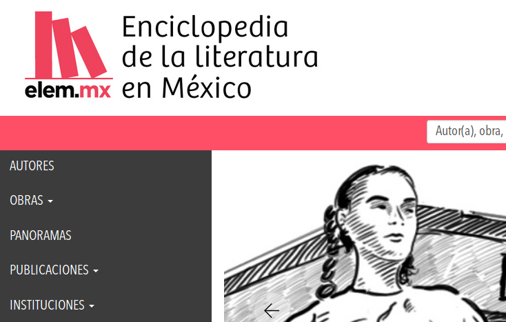
Enciclopedia de la Literatura en México (elem.mx) Biblioteca Nacional de la República Argentina |
Bib-ACMé
Bibliografía digital de novelas argentinas, cubanas y mexicanas (1810-1930)http://bibacme.cligs.digital-humanities.de
Objetivos
- reunir datos bibliográficos sobre novelas argentinas, cubanas y mexicanas que se publicaron entre 1830 y 1910
- hacer posible una visión amplia y general de las publicaciones del período
- permitir comparar un corpus determinado de novelas con el conjunto de novelas de referencia (población estadística)
- facilitar el análisis de los datos bibliográficos desde diversas perspectivas y de manera automática y cuantitativa
Fuentes
Bibliografías impresas:
Iguiniz: Bibliografía de novelistas mexicanos: ensayo biográfico, bibliográfico y crítico, 1926.Torres-Rioseco: Bibliografía de la novela mejicana, 1933.
Lichtblau: The Argentine Novel: an annotated bibliography, 1997.
Diccionarios bibliográficos digitales:
Diccionario de la literatura cubana, 1999.Enciclopedia de la literatura en México, 2016.
Además:
HathiTrust Digital LibraryInternet Archive
Wikisource
Criterios de selección
- Novelas cortas (5.000-35.000 palabras) y largas (> 35.000 palabras)
- Novelas de autores de origen argentino, cubano, mexicano
- Novelas publicadas en Argentina, Cuba y México, entre 1830 y 1910
Modelo de datos
- Modelización de los datos en XML-TEI
- Modelo basado en los principios de FRBR (Requerimientos funcionales para registros bibliográficos)
- Conceptos básicos: autores, obras, ediciones
Download:
http://bibacme.cligs.digital-humanities.de/sobre/datos
Aplicación web
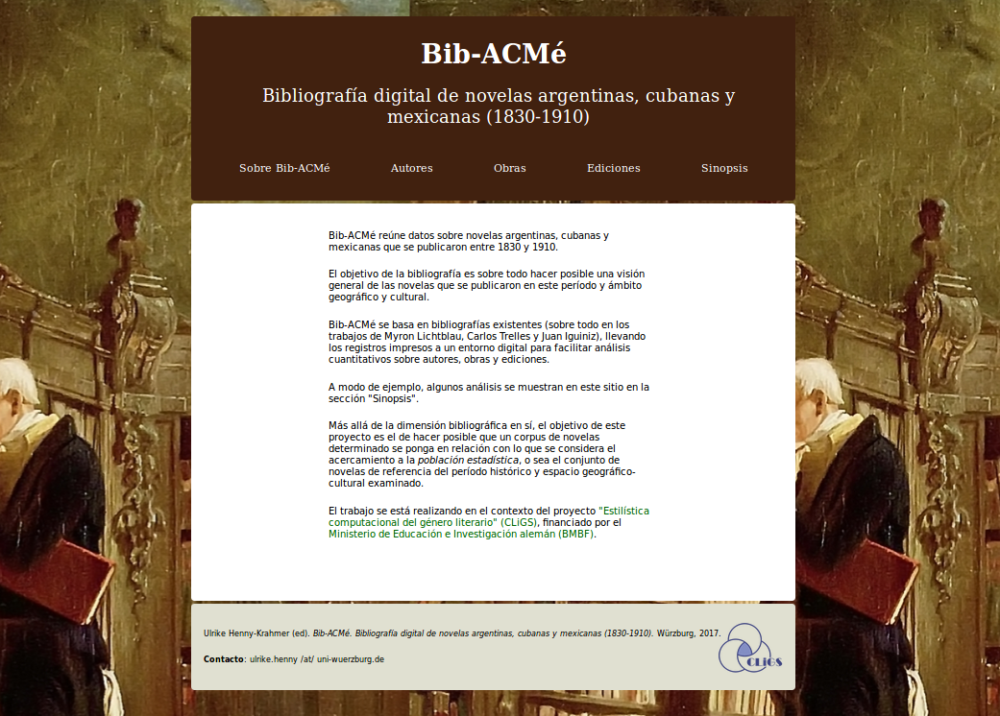Aplicación web: Búsqueda
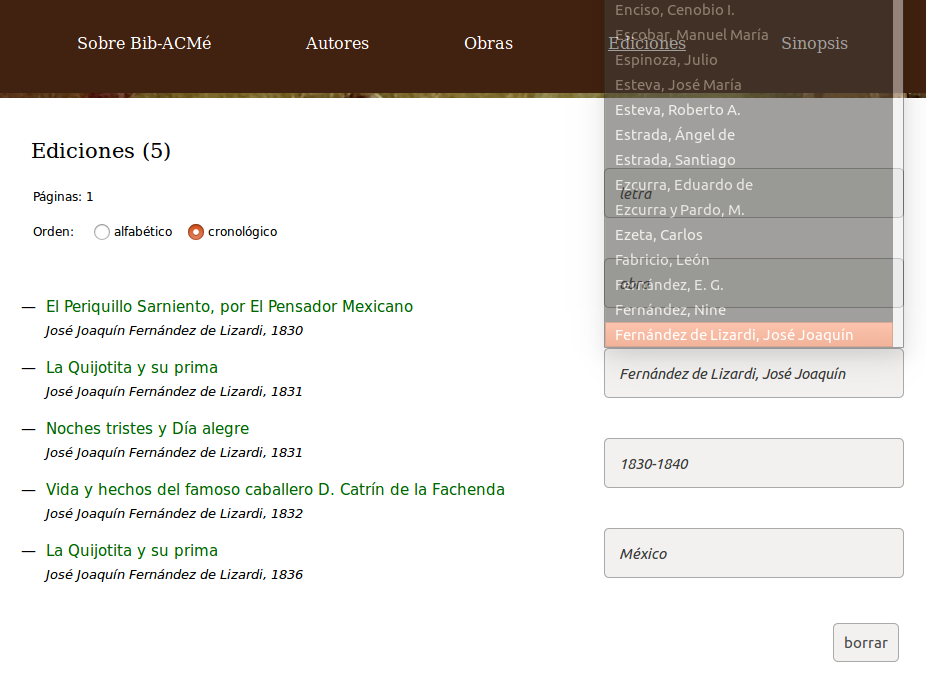Análisis: Autores por sexo
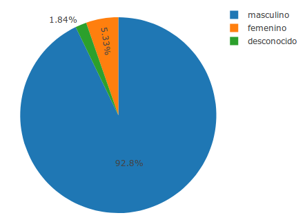http://bibacme.cligs.digital-humanities.de/sinopsis/autores-por-sexo
Análisis: Obras por año
| Argentina | 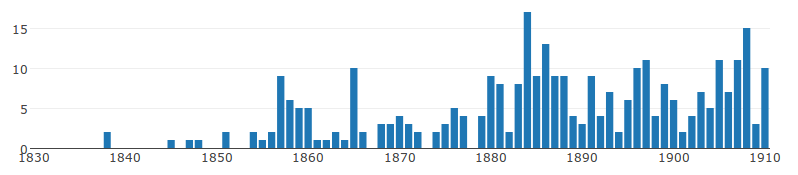 |
| Cuba | 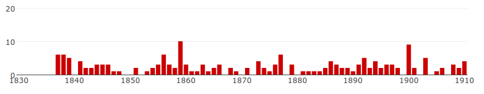 |
| México | 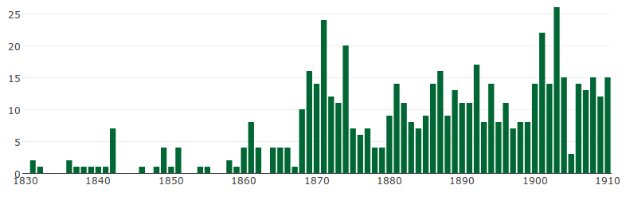 |
http://bibacme.cligs.digital-humanities.de/sinopsis/obras-por-ano
Análisis: Obras por autor
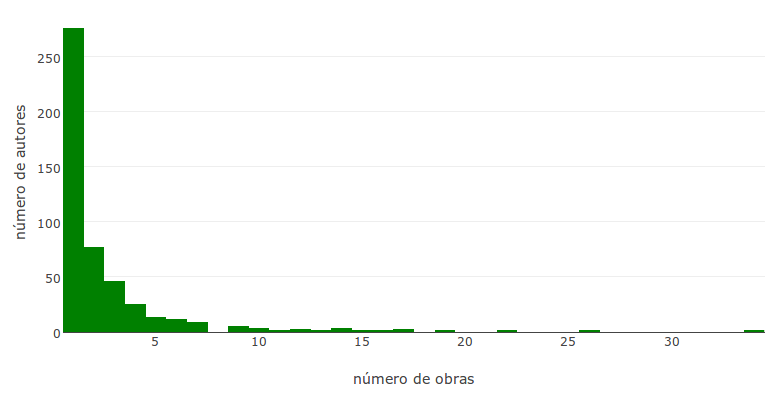http://bibacme.cligs.digital-humanities.de/sinopsis/obras-por-autor
Análisis: Ediciones por obra
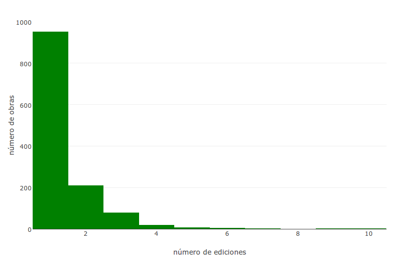http://bibacme.cligs.digital-humanities.de/sinopsis/ediciones-por-obra
Análisis: corpus vs. bibliografía
- 220 Novelas en el corpus
- Bibliografía: 488 autores, 1274 obras, 1779 ediciones
Análisis: corpus vs. bibliografía
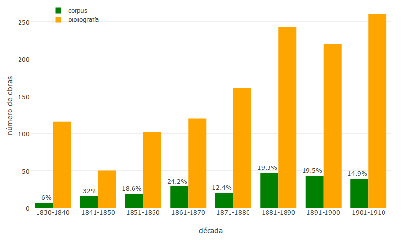Conclusiones y perspectivas
- El modelo de datos puede considerarse el fundamento para una bibliografía digital aprovechable en análisis formales e investigaciones sensibles a determinados conceptos bibliográficos (como lo son por ejemplo "autor", "obra", "edición").
- TEI es uno de los formatos que pueden cumplir estos puntos esenciales.
- Por consecuencia, el acceso al conjunto de los datos en su formato básico es esencial para permitir la (re)utilización de la información bibliográfica en contextos científicos digitales.
- ¿Workflow: libro impreso - escaneo - OCR - TEI?
¡Gracias por la atención!
Diapositivas en: https://hennyu.github.io/hdh_17
Bib-ACMé: http://bibacme.cligs.digital-humanities.de/
CLiGS: http://cligs.hypotheses.de/